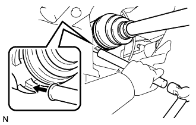

フロントドライブシャフト（4WD） 取り付け |
| 1. フロントドライブ シャフトASSY LH取り付け |
インボードジョイントASSY LHのスプライン部にオートフルードタイプT-IVを塗布する。
|  |
インボードジョイントASSY LHのスプラインをかん合させ、ブラスバーおよびハンマーを使用して、フロントドライブシャフトASSY LHを挿入する。
| 2. フロントドライブ シャフトASSY RH取り付け |
インボードジョイントASSY RHのスプライン部にオートフルードタイプT-IVを塗布する。
シャフトのスプラインを合わせ、ドライブシャフトASSY RHを確実に挿入する。
 |
角軸マイナスドライバーを使用して、ドライブシャフトベアリングブラケットホールスナップリングをベアリングブラケットに取り付け、新品のベアリングブラケットボルトNo.1を取り付ける。
| 3. フロントアクスルASSY LH取り付け |
 |
フロントアクスルASSY LHを車両外側に押して、フロントアクスルASSY LHにフロントドライブシャフトASSY LHのスプラインをかん合させ、挿入する。
 |
フロントアクスルASSYをショックアブソーバに取り付け、車両前方からボルト２本を挿入し、ナット２個を締め付ける。
| 4. フロントアクスルASSY RH取り付け |
| 5. タイロッドエンドLH取り付け |
タイロッドエンドLHをステアリングナックルに取り付け、キャッスルナットで締め付ける。
新品のコッターピンを取り付ける。
| 6. タイロッドエンドRH取り付け |
| 7. スピード センサ FR LH取り付け |
 |
ボルトで、スピードセンサFR LHをステアリングナックルに取り付ける。
 |
スピードセンサFR LHのクランプおよびフレキシブルホースをフロントショックアブソーバASSY LHに取り付ける。
| 8. スピード センサ FR RH取り付け |
| 9. フロントディスクブレーキキャリパASSY LH取り付け |
合わせマークをあわせてフロントディスクを取り付ける。
 |
ボルト2本でディスクブレーキキャリパASSYをステアリングナックルに取り付ける。
| 10. フロントディスクブレーキキャリパASSY RH取り付け |
| 11. フロントアクスル シャフト ナット LH取り付け |
ソケットレンチ(30mm)を使用して、新品のフロントアクスルハブナットLHを取り付ける。
 |
タガネおよびハンマーを使用して、フロントアクスルハブナットLHをかしめる。
| 12. フロントアクスル シャフト ナット RH取り付け |
| 13. フロントタイヤ取り付け |
| 14. バッテリーマイナスターミナル取り付け |
| 15. オートマチックトランスアクスルフルード補充 |
| 16. オートマチックトランスアクスルフルード点検 |
| 17. トランスファオイル補充 |
| 18. トランスファオイル点検 |
| 19. トランスファオイル調整 |
| 20. フロントホイールアライメント点検·調整 |
参照)| 21. テストモード点検(スピードセンサ系統) |
参照)| 22. エンジンアンダ カバー LH取り付け |
スクリュー2個およびボルト2本で、エンジンアンダカバーLHを取り付ける。
| 23. エンジンアンダ カバー RH取り付け |
スクリュー2個およびボルト2本で、エンジンアンダカバーRHを取り付ける。
ナットを、締め付ける。